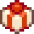
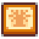
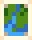
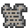
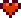
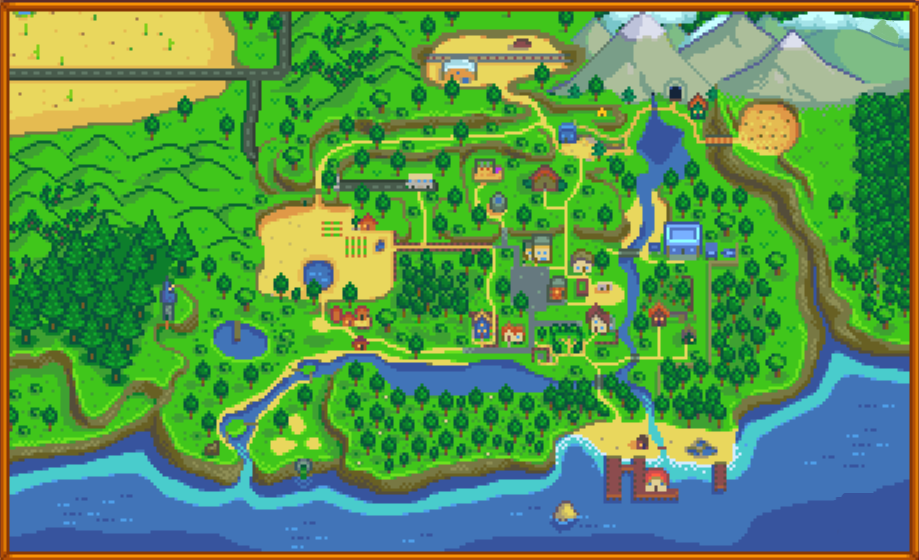

Assistant
Gifts
Bundles
Crops
Map
About
List of Villagers
Friendship
Toggle Universal
Villager

Loves
Likes
No Results
Universal Loves
Universal Likes
All Artisan Goods
(Except for
which is disdivked, and
which is hated)
All Cooking
(Except for
and
, which are universally neutral, and
which is hated)
All Flowers
(Except for
which is hated)
All Foraged Minerals
(Except
which varies by
villager
)
All Fruit Tree Fruits
All Gems
(Except
which is Loved)
All Vegetables
including
(Except
and
which are Universal Neutrals)
